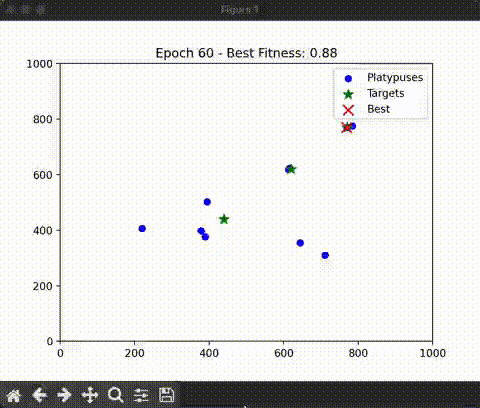
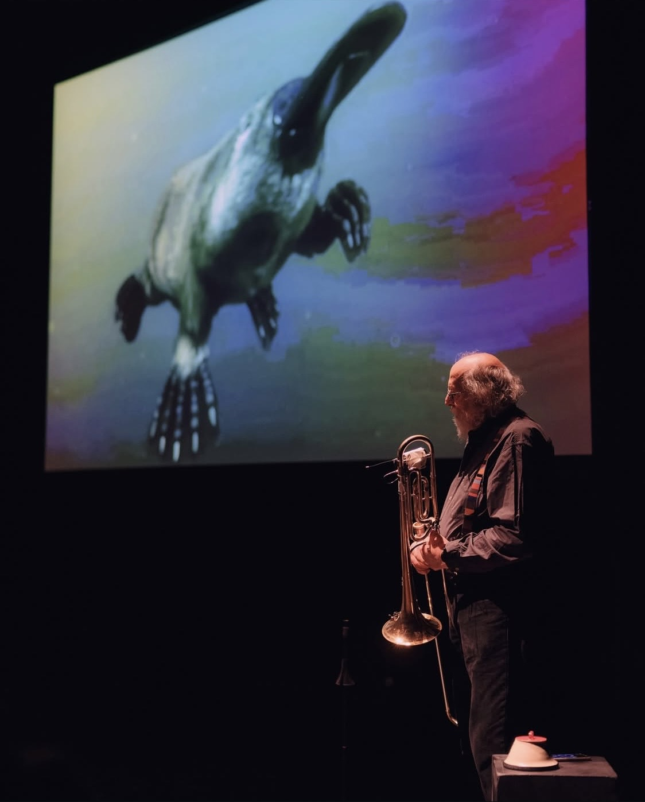
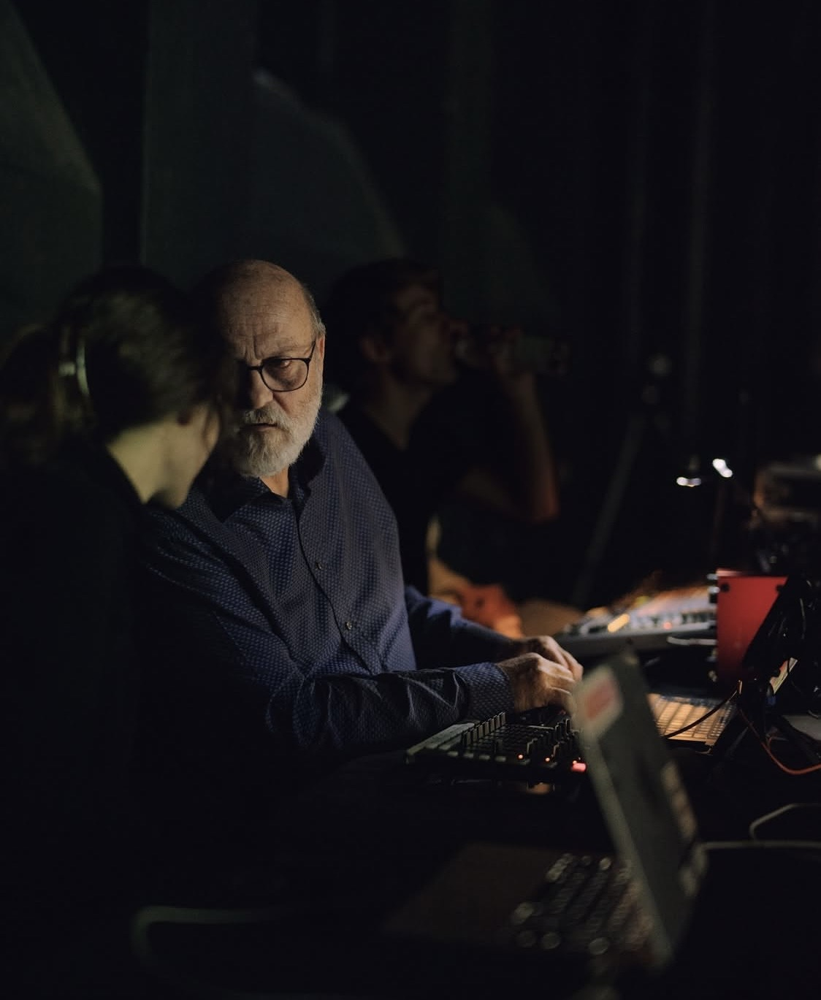
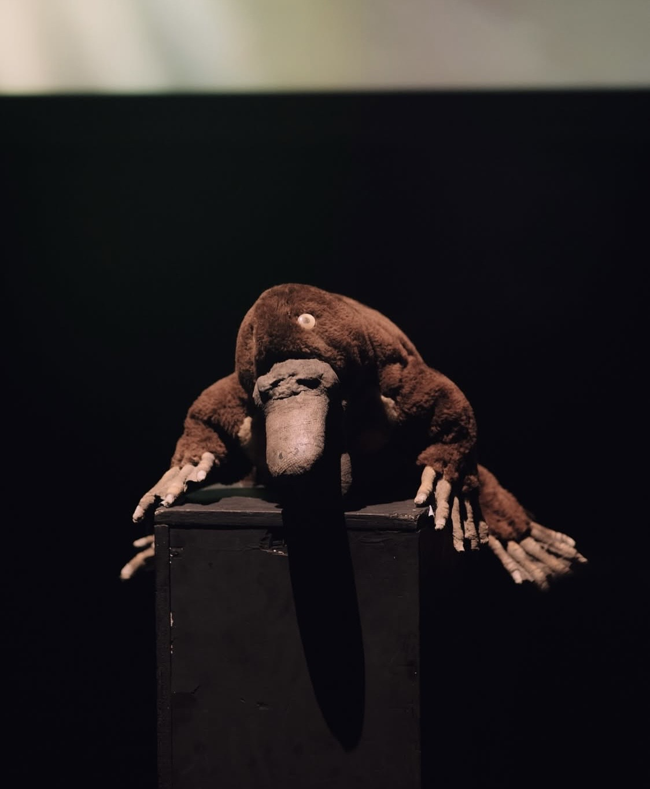
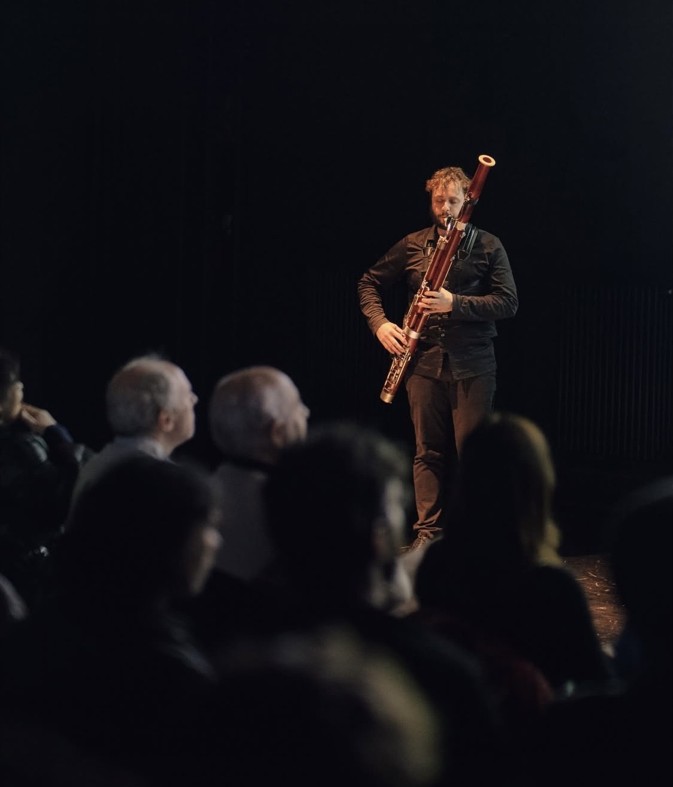
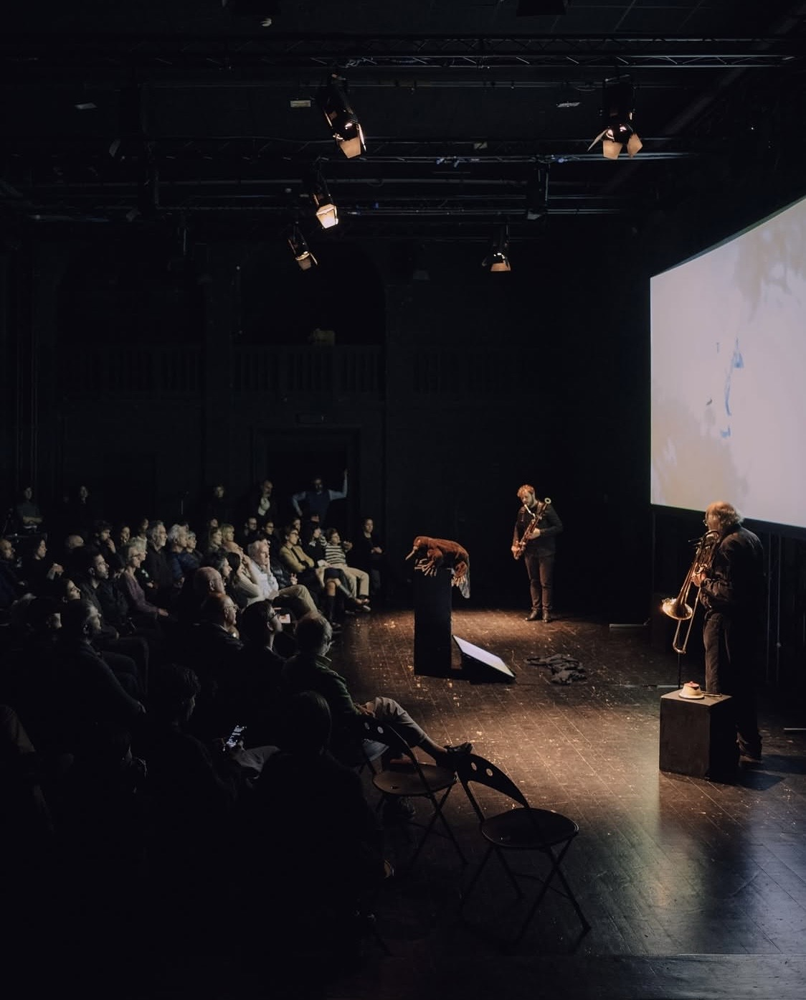

>>> code
>>> pseudo-code
>>> code
>>> pseudo-code
Ornythorhynchus Live Somewhere
[python, max]
Electroacoustic improvisation performance featuring Giancarlo Schiaffini (trombone), Walter Prati (electronics), Gianmarco Canato (bassoon), and Matilde Sartori (software applications). The concert, part of the ninth edition of Parade Électronique curated by MMT, took place at Teatro Arsenale on November 16, 2025, and reinterprets the 1985 multimedia work in a contemporary key, exploring through sound the tensions between rationality and absurdity, the organic and the artificial, ecological adaptation and environmental crisis.
For this occasion, I developed an algorithm inspired by my Slime Machine project. It simulates platypus behavior to transform sounds in real time, managing a population of “virtual platypuses” that move through a two-dimensional frequency space in search of target frequencies, as if they were prey in a sonic environment. Walter Prati used this system during the performance to control a granular synthesizer, creating an evolving dialogue between acoustic instruments and electronic processing.






PRESS: Ornithorhynchus Live Somewhere - NERO editions, Parade Électronique: musica, tecnologia e globalizzazione - djmagitalia, Parade Électronique 2025 — Nova Tempora / Omnes Mundo: nelle immaginazioni più profonde dell’elettronica - t-mag, Radio3 Suite - Magazine Convegno "L'intelligenza del contrabbasso... e del fagotto" al Teatro Arsenale di Milano